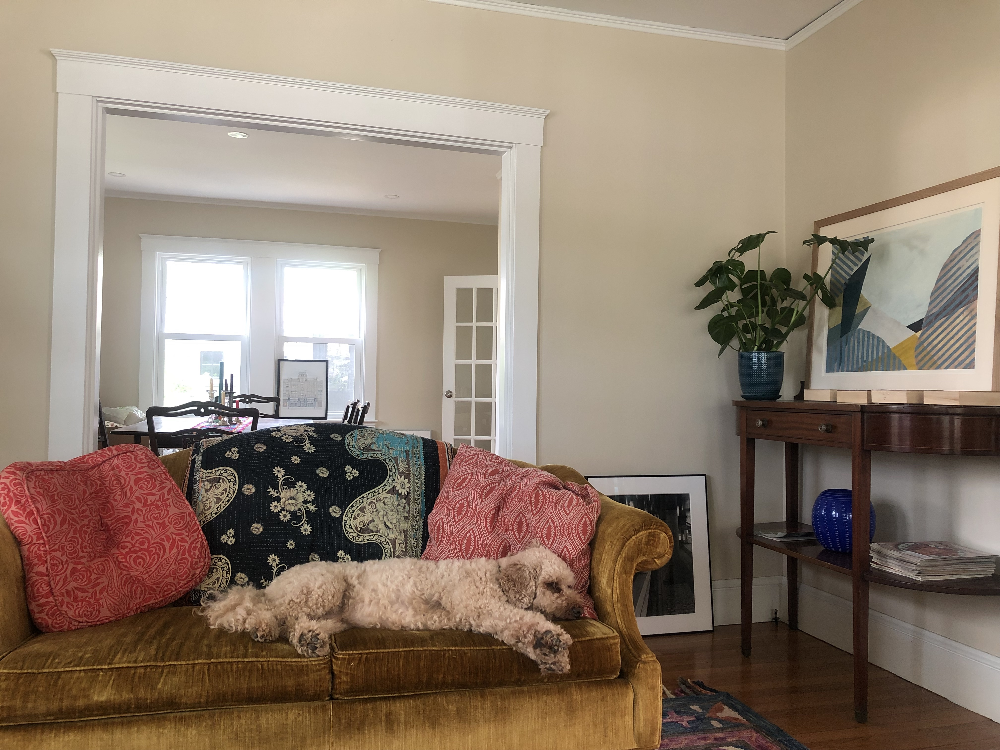

|

|
Background
BioHi! I'm Erin, a project director at a research institute in Boston. I lead systems integration for our website, impactcollaboratory.org, and our project management system, Smartsheet. Along with developing and maintaining our intranet in a Smartsheet dashboard/portal, i've built out grant tracking systems, application and voting systems, a directory, and more. I integrate this work with our public-facing website, as well as lead its design and maintenance. I started taking web development courses because I felt so eager to build on my own and understand how to make a website look the way I envision it. Learning to code on the side has opened up opportunities within my current role and organization. It has been such fun to think, build, and create! I live with my partner right outside Boston. We love to cook, garden, ski, and golf. We have a mini goldendoodle, Stanley, that we call noodle. |